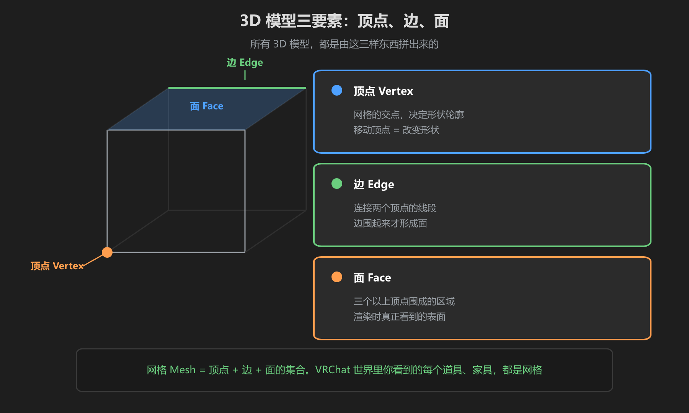
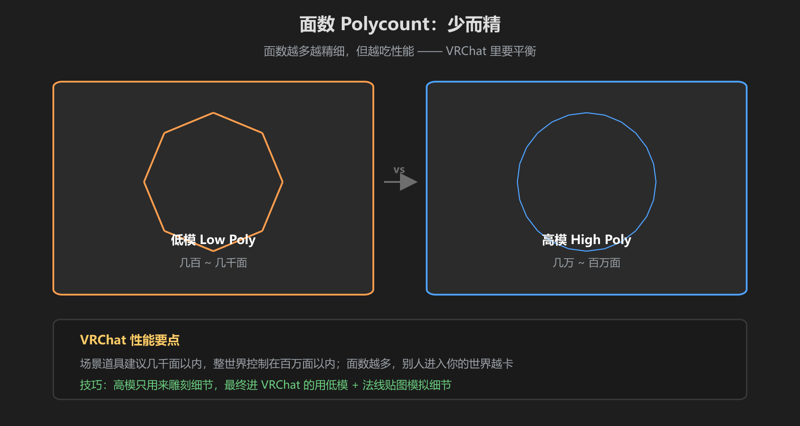

第 1 篇：建模是什么 — 顶点、边、面
做 VRChat 世界的第一个问题：世界里的家具、建筑、道具是怎么来的？答案是建模——在 3D 软件里做出模型的形状，再导入 Unity。Blender 就是其中最常用的免费软件。
1. 3D 模型的三要素
任何 3D 模型，无论多复杂，都是由三样东西组成的：

图：顶点、边、面 —— 3D 模型的最小组成单位
| 要素 | 是什么 | 例子 |
|---|---|---|
| 顶点 Vertex | 网格中的点，决定形状轮廓 | 方块 8 个角点 |
| 边 Edge | 连接两个顶点的线段 | 方块 12 条棱 |
| 面 Face | 顶点围成的表面，渲染时看到的就是它 | 方块 6 个面 |
核心概念：顶点 + 边 + 面的集合就叫网格 Mesh。建模的本质 = 移动顶点、加边、改面，把网格捏成想要的形状。游戏里所有物体都是网格。
2. 面数 vs 质量

图：面数越多越精细，但也越吃性能 —— VRChat 里要克制
面数（Polycount）是模型的「细节数量」：面越多，形状越圆滑精细，但渲染时 GPU 的工作量越大。VRChat 是多人实时世界，性能直接决定别人愿不愿意进你的世界：
- 低模 Low Poly：几百 ~ 几千面，适合 VRChat 场景道具
- 高模 High Poly：几万 ~ 百万面，只用于雕刻细节或烘焙法线贴图，不直接进 VRChat
- VRChat 世界预算：单个道具几千面以内，整世界尽量控制在百万面以内
3. 常用文件格式
| 格式 | 用途 | 说明 |
|---|---|---|
| .blend | Blender 源文件 | 保留全部编辑信息，Blender 内部用 |
| .fbx | 导入 Unity | VRChat 世界资产的标准交接格式，推荐 |
| .obj | 通用交换 | 更简单但丢失较多信息（修改器、材质设置），不推荐当主力 |
VRChat 性能红线：一个 10 万面的凳子也许能跑，但 20 个人同时看它就会卡。建模时养成习惯：能少一分的面，绝不白白多加。第 6 篇有面数问题的自查表。
学前检查清单
- 能说出顶点、边、面分别是什么
- 理解网格 Mesh 的概念
- 知道为什么 VRChat 里要控制面数
- 知道 .fbx 是 Blender → Unity 的推荐格式